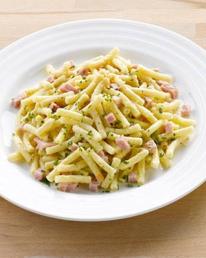

Belgian Beef Stew

Description
Belgian Beef Stew, or "Stoofvlees," is a hearty dish where tender beef simmers in a flavorful sauce crafted with Belgian dark beer, vinegar, and spices. Slow-cooked to develop rich flavors, the dish offers a comforting balance of sweetness and tanginess. Served with mustard-slathered toast or fries, it's a cherished symbol of Belgian comfort cuisine.
Ingredients
- 1.5 kg beef stew meat, cut into chunks
- 2 onions, finely chopped
- 2 cloves of garlic, minced
- 2 tablespoons flour
- 2 tablespoons brown sugar
- 2 tablespoons apple or red wine vinegar
- 500 ml beef broth
- 330 ml Belgian dark beer (such as a Dubbel or Trappist-style beer)
- 2 bay leaves
- 2 sprigs of thyme
- 2 slices of bread (preferably Belgian-style brown bread)
- Mustard for serving
- Salt and pepper to taste
- Butter or oil for frying
Steps
In a large pot, heat butter or oil over medium-high heat. Add the chopped onions and cook until they are soft and translucent.
- Add the minced garlic and cook for another minute.
- Add the beef chunks and brown them on all sides.
Add the beef chunks and brown them on all sides.
- Sprinkle the flour and brown sugar over the meat, and stir well to coat.
- Pour in the vinegar, beef broth, and dark beer. Stir to combine.
- Add the bay leaves and thyme sprigs to the pot.
- Cover the pot and let the stew simmer on low heat for about 2 to 3 hours, or until the meat is tender and the flavors are well-developed.
- Toast the slices of bread and spread them with mustard.
- Serve the stoofvlees hot, accompanied by the mustard-spread toast. It's often served with Belgian frites (fries) as well.